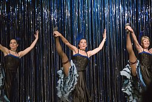
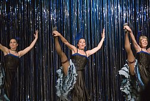

Fun Rendezvous Activities
- Ice scupltures competition: Carvers from around the world will create stunning snow sculptures
- Yukon Quest International Sled Dog Race:Mushers and their dog teams race 13,000km on frozen wilderness between Whitehorse, Yukon and Fairbanks, Alaska
- Sourdough Sam and Rendezvous Queen: Locals enter to run for Sourdough Sam or Rendezvous Queen for the year
- Dog packing competition: Dogs pack as many bags of dog food as they can and winner keeps the bags
- Pet parade: Cats and dogs compete with outfits and tricks
- Rap battle: Locals rap battle for fun
- Food vendors: Food and candy trucks with many local foods for sale
- Pub Crawl: People buy tickets to visit each bar with transportation
- Berlesque shows and live music and entertainment
- Jet air show
- Fireworks
Whitehorse, Yukon Images
 
